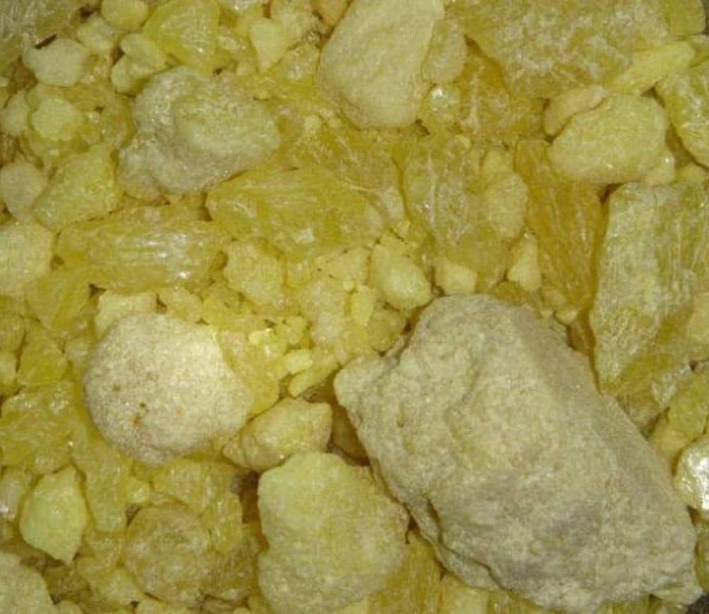
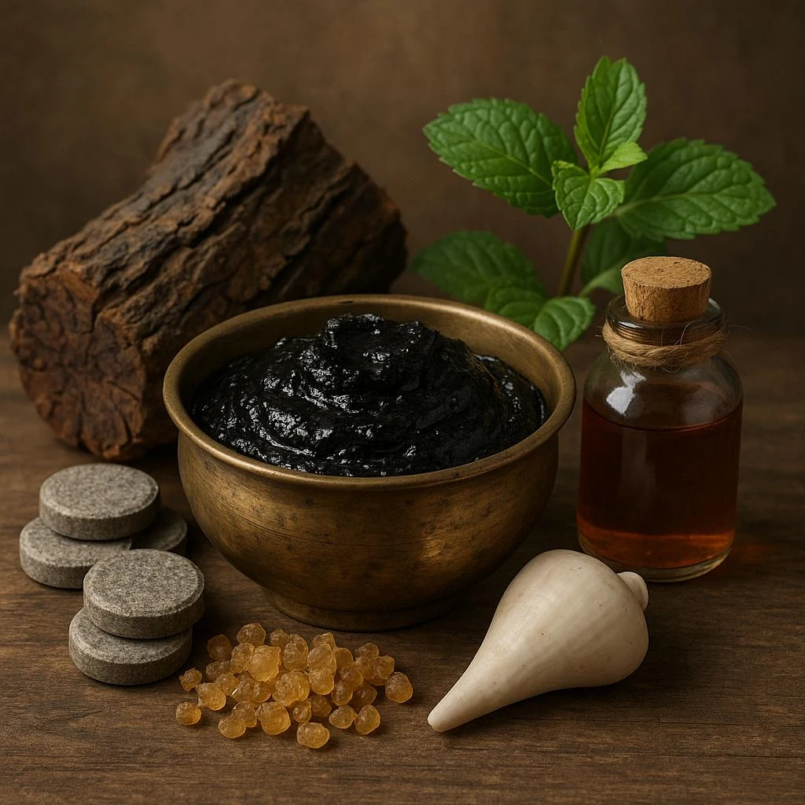

Indications
- Ringworm and fungal infectionsदाद एवं फंगल संक्रमण
- Scabies and itchingखुजली एवं स्केबीज़
- Eczema and skin irritationएक्जिमा एवं त्वचा की जलन
- Skin rashesत्वचा पर चकत्ते

This Ayurvedic skin ointment is a specialized herbal formula enriched with Neem to effectively treat various fungal and inflammatory skin conditions. It is specifically indicated for the relief of ringworm, scabies, eczema, and itchy skin.
All ages - children and adults
Apply a thin layer to the affected area 2-3 times daily, or as directed by a physician.

Gandhak (Sulphur purificatum)
Gandhak (purified Sulphur) supports healthy skin and reduces itching.

Babchi Oil (Psoralea corylifolia)
Babchi Oil supports healthy skin texture and skin balance.

Coaltar Solution (Coal Tar)
Coaltar Solution soothes dry and irritated skin conditions.

Neem Oil (Azadirachta indica)
Neem Oil supports skin health and reduces irritation.

Samudraphene (Sepia officinalis)
Samudraphene supports skin comfort and wellness.

Maulshri Flowers (Mimusops elengi)
Maulshri Flowers support skin nourishment and freshness.

Babool Flowers (Acacia nilotica)
Babool Flowers support healthy skin and natural balance.

Paraffin Base (Paraffinum liquidum)
Paraffin Base keeps skin soft and supports hydration.